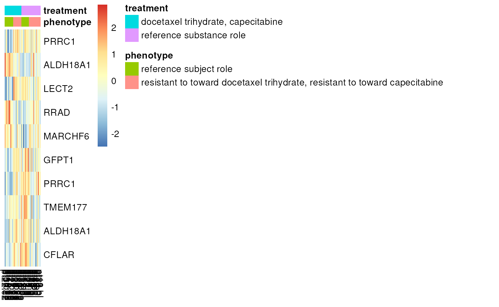

vignettes/metadata.Rmd
metadata.RmdThe data in Gemma are manually annotated by curators with terms, often using an ontology term on both dataset and sample level. In Gemma.R three primary functions allow access to these annotations for a given dataset.
get_dataset_annotations: This function returns
annotations associated with a dataset. These try to serve as tags
describing the dataset as a whole and they characteristics that samples
within the datasets have while also including some additional
terms.
get_dataset_samples: This function returns samples
and associated annotations related to their experimental groups for an
experiment
get_dataset_differential_expression_analyses: This
function returns information about differential expression analyses
automatically performed by Gemma for a given experiment. Each row of the
output is a contrast where a specific property or an interaction of
properties are described.
In the examples below we will be referring to GSE18728 experiment, where drug resistant cancer patients and
Terms returned via get_dataset_annotations are tags used
to describe a dataset in general terms.
get_dataset_annotations('GSE18728') %>%
gemma_kable| class.name | class.URI | term.name | term.URI |
|---|---|---|---|
| disease | http://www.ebi…/EFO_0000408 | breast cancer | http://purl.obolibrary…/MONDO_0007254 |
| labelling | http://www.ebi…/EFO_0000562 | biotin | http://purl.obolibrary…/CHEBI_15956 |
| phenotype | http://www.ebi…/EFO_0000651 | docetaxel trihydrate | http://purl.obolibrary…/CHEBI_59809 |
| treatment | http://www.ebi…/EFO_0000727 | capecitabine | http://purl.obolibrary…/CHEBI_31348 |
| phenotype | http://www.ebi…/EFO_0000651 | resistant to | http://purl.obolibrary…/PATO_0001178 |
| organism part | http://www.ebi…/EFO_0000635 | mammary gland | http://purl.obolibrary…/UBERON_0001911 |
These tags come as a class/term pairs and inherit any terms that is assigned to any of the samples. Therefore we can see all chemicals and cell types used in the experiment.
Samples and differential expression contrasts in Gemma are annotated with factor values. These values contain statements that describe these samples and which samples belong to which experimental in a differential expression analysis respectively.
In gemma.R these values are stored in nested data.tables
and can be found by accessing the relevant columns of the outputs.
Annotations for samples can be accessed using
get_dataset_samples. sample.factorValues
column contains the relevant information
samples <- get_dataset_samples('GSE18728')
samples$sample.factorValues[[1]] %>%
gemma_kable()| category | category.URI | value | value.URI | predicate | predicate.URI | object | object.URI | summary | ID | factor.ID | factor.category | factor.category.URI |
|---|---|---|---|---|---|---|---|---|---|---|---|---|
| collection of material | http://www.ebi…/EFO_0005066 | DE_Include | http://gemma.msl…/TGEMO_00013 | NA | NA | NA | NA | DE_Include | 134952 | 24474 | collection of material | http://www.ebi…/EFO_0005066 |
| block | http://www.ebi…/EFO_0005067 | Batch_09_5/20/05 | NA | NA | NA | NA | NA | Batch_09_5/20/05 | 184673 | 39147 | block | http://www.ebi…/EFO_0005067 |
| phenotype | http://www.ebi…/EFO_0000651 | resistant to | http://purl.obolibrary…/PATO_0001178 | toward | http://purl.obolibrary…/RO_0002503 | capecitabine | http://purl.obolibrary…/CHEBI_31348 | resistant to toward capecit… | 76119 | 11430 | phenotype | http://www.ebi…/EFO_0000651 |
| phenotype | http://www.ebi…/EFO_0000651 | resistant to | http://purl.obolibrary…/PATO_0001178 | toward | http://purl.obolibrary…/RO_0002503 | docetaxel trihydrate | http://purl.obolibrary…/CHEBI_59809 | resistant to toward capecit… | 76119 | 11430 | phenotype | http://www.ebi…/EFO_0000651 |
| treatment | http://www.ebi…/EFO_0000727 | reference substance role | http://purl.obolibrary…/OBI_0000025 | NA | NA | NA | NA | reference substance role | 134950 | 24473 | treatment | http://www.ebi…/EFO_0000727 |
The example above shows a single factor value object for one sample.
The rows of this data.table are statements that belong to a
factor value. Below each column of this nested table is described. If a
given field is filled by an ontology term, the corresponding URI column
will contain the ontology URI for the field.
category/category.URI: Category of the
individual statement, such as treatment, phenotype or strainvalue/value.URI: The subject of the
statement.predicate/predicate.URI: When a subject
alone is not enough to describe all details, a statement can contain a
predicate and an object. The predicate describes the relationship
between the subject of the statement and the object. In the example
above, these are used to represent resistance to cancer drugs.object/object.URI: The object of a
statement is a property further describing it’s value such as the dosage
of a drug or a timepoint.summary: A plain text summary of the factorValue.
Different statements will have the same summary if they are part of the
same factor valueID: An integer identifier for the specific factor
value. In the example above, phenotype of the patient is defined as a
single factor value made up of two statements stating that the patient
is resistant to both capecitabine and docetaxel trihydrate. This factor
value has the ID of 76119 which is shared by both rows containing the
statements describing it. This ID will repeat for every other patient
that has the same drug resistance or differential expression results
using that factor as a part of their contrast. For instance we can see
which samples that was subjected to this condition using this ID instead
of trying to match the other columns describing the statements
id <- samples$sample.factorValues[[1]] %>%
filter(value == 'resistant to') %>% {.$ID} %>% unique
# count how many patients has this phenotype
samples$sample.factorValues %>% sapply(\(x){
id %in% x$ID
}) %>% sum## [1] 38factor.ID: An integer identifier for the factor. A
factor holds specific factor values. For the example above whether or
not a patient has drug resistance is stored under the idWe can use this to fetch all distinct phenotypes
id <- samples$sample.factorValues[[1]] %>%
filter(value == 'resistant to') %>% {.$factor.ID} %>% unique
samples$sample.factorValues %>% lapply(\(x){
x %>% filter(factor.ID == id) %>% {.$summary}
}) %>% unlist %>% unique## [1] "resistant to toward capecitabine, resistant to toward docetaxel trihydrate"
## [2] "reference subject role"This shows us the dataset has control patients and patients who are
resistant to capecitabine and trihydrate. . This ID can be used to match
the factor between samples and between samples and differential
expression experiments -
factor.category/factor.category.URI: The
category of the whole factor. Usually this is the same with the
category of the statements making up the factor value.
However in cases like the example above, where the value describes a
treatment while the factor overall represents a phenotype, they can
differ.
gemma.R includes a convenience function to create a simplified design matrix out of these factor values for a given experiment. This will unpack the nested data.frames and provide a more human readable output, giving each available factor it’s own column.
design <- make_design(samples)
design[,-1] %>% head %>% # first column is just a copy of the original factor values
gemma_kable()| collection of material | block | phenotype | treatment | |
|---|---|---|---|---|
| pt15.bl | DE_Include | Batch_09_5/20/05 | resistant to toward capecit… | reference substance role |
| pt3.bl | DE_Include | Batch_07_5/18/05 | reference subject role | reference substance role |
| pt11.or | DE_Exclude | Batch_05_4/19/05 | resistant to toward capecit… | |
| pt24.bl | DE_Include | Batch_06_4/20/05 | resistant to toward capecit… | reference substance role |
| pt29.or | DE_Exclude | Batch_01_3/8/05 | resistant to toward capecit… | |
| pt20.or | DE_Exclude | Batch_04_4/7/05 | resistant to toward capecit… |
Using this output, here we look at the sample sizes for different experimental groups.
design %>%
group_by(treatment,phenotype,`collection of material`) %>%
summarize(n= n()) %>%
arrange(desc(n)) %>%
gemma_kable()## `summarise()` has grouped output by 'treatment', 'phenotype'. You can override
## using the `.groups` argument.| treatment | phenotype | collection of material | n |
|---|---|---|---|
| resistant to toward capecit… | DE_Exclude | 16 | |
| reference substance role | resistant to toward capecit… | DE_Include | 13 |
| docetaxel trihydrate, capec… | reference subject role | DE_Include | 9 |
| docetaxel trihydrate, capec… | resistant to toward capecit… | DE_Include | 9 |
| reference substance role | reference subject role | DE_Include | 8 |
| reference subject role | DE_Exclude | 6 |
For most experiments it contains, Gemma performs automated differential expression analyses. The kinds of analyses that will be performed is informed by the factor values belonging to the samples.
# removing columns containing factor values and URIs for brevity
remove_columns <- c('baseline.factors','experimental.factors','subsetFactor','factor.category.URI')
dea <- get_dataset_differential_expression_analyses("GSE18728")
dea[,.SD,.SDcols = !remove_columns] %>%
gemma_kable()| result.ID | contrast.ID | experiment.ID | factor.category | factor.ID | subsetFactor.subset | probes.analyzed | genes.analyzed |
|---|---|---|---|---|---|---|---|
| 573720 | 134951 | 2914 | treatment | 24473 | TRUE | 54674 | 21270 |
| 573721 | 76119_134951 | 2914 | phenotype,treatment | 11430,24473 | TRUE | 54672 | 21269 |
| 573722 | 76119 | 2914 | phenotype | 11430 | TRUE | 54674 | 21270 |
The example above shows the differential expression analyses results.
Each row of this data.table represents a differential expression
contrast connected to a fold change and a p value in the output of
get_differential_expression_values function. If we look at
the contrast.ID we will see the factor value identifiers
returned in the ID column of our
sample.factorValues. These represent which factor value is
used as the experimental factor. Note that some rows will have two IDs
appended together. These represent the interaction effects of multiple
factors. For simplicty, we will start from a contrast without an
interaction.
contrast <- dea[1,]
# removing URIs for brevity
uri_columns = c('category.URI',
'object.URI',
'value.URI',
'predicate.URI',
'factor.category.URI')
contrast$baseline.factors[[1]][,.SD,.SDcols = !uri_columns] %>%
gemma_kable()| category | value | predicate | object | summary | ID | factor.ID | factor.category |
|---|---|---|---|---|---|---|---|
| treatment | reference substance role | NA | NA | reference substance role | 134950 | 24473 | treatment |
contrast$experimental.factors[[1]][,.SD,.SDcols = !uri_columns] %>%
gemma_kable()| category | value | predicate | object | summary | ID | factor.ID | factor.category |
|---|---|---|---|---|---|---|---|
| treatment | capecitabine | NA | NA | docetaxel trihydrate, capec… | 134951 | 24473 | treatment |
| treatment | docetaxel trihydrate | NA | NA | docetaxel trihydrate, capec… | 134951 | 24473 | treatment |
Here, we can see the baseline is the non-resistant controls, being compared to drug resistant patients.
If we examine a factor with interaction, both baseline and experimental factor value columns will contain two factor values.
contrast <- dea[2,]
contrast$baseline.factors[[1]][,.SD,.SDcols = !uri_columns] %>%
gemma_kable()| category | value | predicate | object | summary | ID | factor.ID | factor.category |
|---|---|---|---|---|---|---|---|
| phenotype | reference subject role | NA | NA | reference subject role | 76118 | 11430 | phenotype |
| treatment | reference substance role | NA | NA | reference substance role | 134950 | 24473 | treatment |
contrast$experimental.factors[[1]][,.SD,.SDcols = !uri_columns] %>%
gemma_kable()| category | value | predicate | object | summary | ID | factor.ID | factor.category |
|---|---|---|---|---|---|---|---|
| phenotype | resistant to | toward | capecitabine | resistant to toward capecit… | 76119 | 11430 | phenotype |
| phenotype | resistant to | toward | docetaxel trihydrate | resistant to toward capecit… | 76119 | 11430 | phenotype |
| treatment | capecitabine | NA | NA | docetaxel trihydrate, capec… | 134951 | 24473 | treatment |
| treatment | docetaxel trihydrate | NA | NA | docetaxel trihydrate, capec… | 134951 | 24473 | treatment |
A third place that can contain factorValues is the
subsetFactor. Certain differential expression analyses
disclude certain samples based on a given factor. In this example we can
see the curators added a specific factor to remove some samples from
differential expression analyses
contrast$subsetFactor[[1]][,.SD,.SDcols = !uri_columns] %>%
gemma_kable()| category | value | predicate | object | summary | ID | factor.ID | factor.category |
|---|---|---|---|---|---|---|---|
| collection of material | DE_Include | NA | NA | DE_Include | 134952 | 24474 | NA |
Looking at the design table we made above, you can see that these were samples where treatment was not specified.
The ids of the factor values included in
baseline.factors and experimental.factors
along with subsetFactor can be used to determine which
samples represent a given contrast. For convenience,
get_dataset_object function which is used to compile
metadata and expression data of an experiment in a single object,
includes resultSets and contrasts argument
which will return the data already composed of samples representing a
particular contrast.
obj <- get_dataset_object("GSE18728",resultSets = contrast$result.ID,contrasts = contrast$contrast.ID,type = 'list')
obj[[1]]$design[,-1] %>%
head %>% gemma_kable()| collection of material | block | phenotype | treatment | |
|---|---|---|---|---|
| pt15.bl | DE_Include | Batch_09_5/20/05 | resistant to toward capecit… | reference substance role |
| pt3.bl | DE_Include | Batch_07_5/18/05 | reference subject role | reference substance role |
| pt24.bl | DE_Include | Batch_06_4/20/05 | resistant to toward capecit… | reference substance role |
| pt17.bl | DE_Include | Batch_06_4/20/05 | resistant to toward capecit… | reference substance role |
| pt26.bl | DE_Include | Batch_09_5/20/05 | resistant to toward capecit… | reference substance role |
| pt17.c2 | DE_Include | Batch_06_4/20/05 | resistant to toward capecit… | docetaxel trihydrate, capec… |
We suggested that the contrast.ID of a contrast also
corresponded to a column in the differential expression results,
acquired by get_differential_expression_values. We can use
what we have learned to take a look at the expression of genes at the
top of the phenotype, treatment interaction. Each result.ID returns its
separate table when accessing diferential expression values.
dif_vals <- get_differential_expression_values('GSE18728')
dif_vals[[as.character(contrast$result.ID)]] %>% head %>%
gemma_kable()| Probe | NCBIid | GeneSymbol | GeneName | pvalue | corrected_pvalue | rank | contrast_76119_134951_log2fc | contrast_76119_134951_tstat | contrast_76119_134951_pvalue |
|---|---|---|---|---|---|---|---|---|---|
| 205278_at | 2571 | GAD1 | glutamate decarboxylase 1 | 0.8487 | 0.9780 | 0.8677 | 0.0950 | 0.1922 | 0.8487 |
| 220185_at | 57731 | SPTBN4 | spectrin beta, non-erythroc… | 0.1935 | 0.7691 | 0.2515 | 0.1804 | 1.3250 | 0.1935 |
| 206956_at | 632|100527963 | BGLAP|PMF1-BGLAP | bone gamma-carboxyglutamate… | 0.2722 | 0.8151 | 0.3339 | -0.2307 | -1.1150 | 0.2722 |
| 1554700_at | 1005 | CDH7 | cadherin 7 | 0.7024 | 0.9529 | 0.7371 | 0.0325 | 0.3851 | 0.7024 |
| 1570225_at | 0.4709 | 0.8919 | 0.5279 | -0.0714 | -0.7287 | 0.4709 | |||
| 208930_s_at | 3609 | ILF3 | interleukin enhancer bindin… | 0.1652 | 0.7500 | 0.2203 | 0.3637 | 1.4164 | 0.1652 |
To get the top genes found associated with this interaction we access
the columns with the correct contrast.ID.
# getting the top 10 genes
top_genes <- dif_vals[[as.character(contrast$result.ID)]] %>%
arrange(across(paste0('contrast_',contrast$contrast.ID,'_pvalue'))) %>%
filter(GeneSymbol!='' | grepl("|",GeneSymbol,fixed = TRUE)) %>% # remove blank genes or probes with multiple genes
{.[1:10,]}
top_genes %>% select(Probe,NCBIid,GeneSymbol) %>%
gemma_kable()| Probe | NCBIid | GeneSymbol |
|---|---|---|
| 224643_at | 133619 | PRRC1 |
| 217791_s_at | 5832 | ALDH18A1 |
| 207409_at | 3950 | LECT2 |
| 204802_at | 6236 | RRAD |
| 215423_at | 10299 | MARCHF6 |
| 202721_s_at | 2673 | GFPT1 |
| 221734_at | 133619 | PRRC1 |
| 218897_at | 80775 | TMEM177 |
| 222416_at | 5832 | ALDH18A1 |
| 214618_at | 8837 | CFLAR |
exp_subset<- obj[[1]]$exp %>%
filter(Probe %in% top_genes$Probe)
genes <- top_genes$GeneSymbol
# ordering design file
design <- obj[[1]]$design %>% arrange(treatment,phenotype)
# shorten the resistance label a bit
design$phenotype[design$phenotype == "resistant to toward capecitabine, resistant to toward docetaxel trihydrate"] = "drug resistant"
exp_subset[,.SD,.SDcols = rownames(design)] %>% t %>% scale %>% t %>%
pheatmap(cluster_rows = FALSE,cluster_cols = FALSE,labels_row = genes,
annotation_col =design %>% select(phenotype,treatment))
## R version 4.3.3 (2024-02-29)
## Platform: x86_64-pc-linux-gnu (64-bit)
## Running under: Ubuntu 22.04.4 LTS
##
## Matrix products: default
## BLAS: /usr/lib/x86_64-linux-gnu/openblas-pthread/libblas.so.3
## LAPACK: /usr/lib/x86_64-linux-gnu/openblas-pthread/libopenblasp-r0.3.20.so; LAPACK version 3.10.0
##
## locale:
## [1] LC_CTYPE=C.UTF-8 LC_NUMERIC=C LC_TIME=C.UTF-8
## [4] LC_COLLATE=C.UTF-8 LC_MONETARY=C.UTF-8 LC_MESSAGES=C.UTF-8
## [7] LC_PAPER=C.UTF-8 LC_NAME=C LC_ADDRESS=C
## [10] LC_TELEPHONE=C LC_MEASUREMENT=C.UTF-8 LC_IDENTIFICATION=C
##
## time zone: UTC
## tzcode source: system (glibc)
##
## attached base packages:
## [1] stats graphics grDevices utils datasets methods base
##
## other attached packages:
## [1] pheatmap_1.0.12 dplyr_1.1.4 gemma.R_2.99.1 BiocStyle_2.30.0
##
## loaded via a namespace (and not attached):
## [1] rappdirs_0.3.3 sass_0.4.8 utf8_1.2.4
## [4] generics_0.1.3 xml2_1.3.6 stringi_1.8.3
## [7] digest_0.6.34 magrittr_2.0.3 timechange_0.3.0
## [10] evaluate_0.23 grid_4.3.3 RColorBrewer_1.1-3
## [13] bookdown_0.37 fastmap_1.1.1 jsonlite_1.8.8
## [16] BiocManager_1.30.22 httr_1.4.7 purrr_1.0.2
## [19] fansi_1.0.6 viridisLite_0.4.2 scales_1.3.0
## [22] textshaping_0.3.7 jquerylib_0.1.4 cli_3.6.2
## [25] rlang_1.1.3 bit64_4.0.5 munsell_0.5.0
## [28] withr_3.0.0 cachem_1.0.8 yaml_2.3.8
## [31] tools_4.3.3 memoise_2.0.1 colorspace_2.1-0
## [34] kableExtra_1.4.0 assertthat_0.2.1 curl_5.2.0
## [37] vctrs_0.6.5 R6_2.5.1 lubridate_1.9.3
## [40] lifecycle_1.0.4 stringr_1.5.1 fs_1.6.3
## [43] bit_4.0.5 ragg_1.2.7 pkgconfig_2.0.3
## [46] desc_1.4.3 pkgdown_2.0.7 pillar_1.9.0
## [49] bslib_0.6.1 gtable_0.3.4 data.table_1.15.0
## [52] glue_1.7.0 systemfonts_1.0.5 highr_0.10
## [55] xfun_0.42 tibble_3.2.1 tidyselect_1.2.0
## [58] rstudioapi_0.15.0 knitr_1.45 farver_2.1.1
## [61] htmltools_0.5.7 svglite_2.1.3 rmarkdown_2.25
## [64] compiler_4.3.3